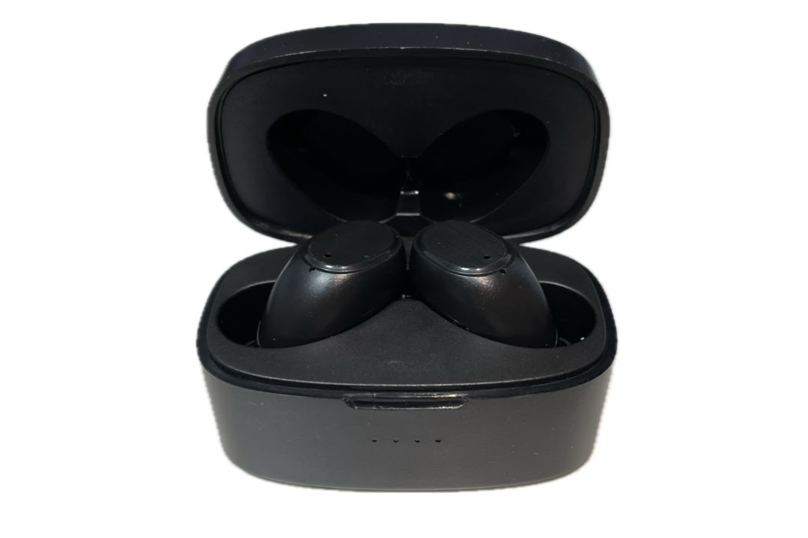
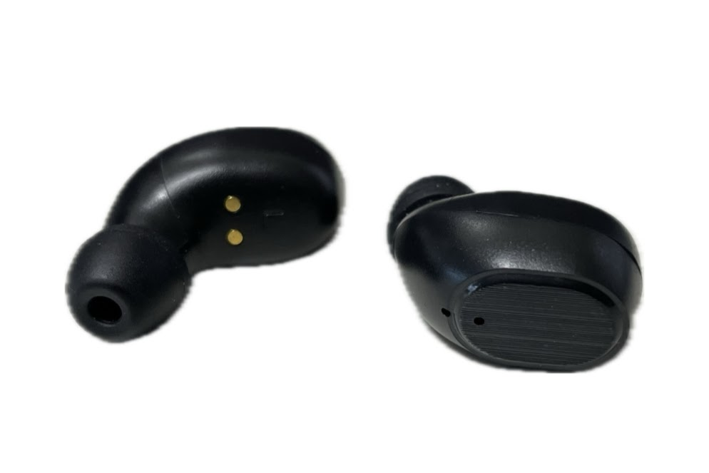
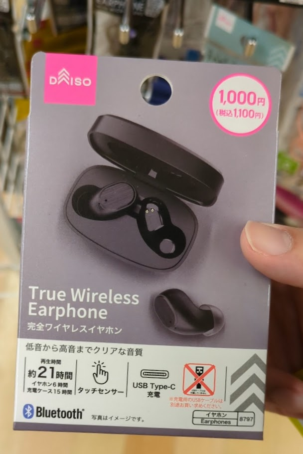

ダイソーの激安ワイヤレスイヤホン長期使用レビュー
公開 yyyy/mm/dd
ダイソーで買った1000円の完全ワイヤレスイヤホンを長期間使用してみての感想です。
はじめに
おひさしぶりですね。ゆいです。
私はテスト期間に突入してバタバタ過ごしておりますが、皆様いかがお過ごしでしょうか。
さて、今回は「ダイソーの激安ワイヤレスイヤホン長期使用レビュー」ということで、前からちょっとやってみたかったレビュー記事を書いてみます。
最後まで読んでね。
概要
ダイソーの1000円ワイヤレスイヤホンにはいくつかの種類があります。「TWS001」という型番のものが最初で、「TWS002」、「E-TWS-2」、「TWS_G273」などがあります。
完全ワイヤレスイヤホン（ＴＷＳ００１）
完全ワイヤレスイヤホン（ＴＷＳ００２）
今回レビューする「TWS_G273」(商品名「完全ワイヤレスイヤホン」)はなぜか公式通販サイトには存在しませんでしたが、ダイソーワイヤレスイヤホンの二代目らしいです。
ちょうど完全ワイヤレスイヤホンが欲しかったので、2022年の夏に買いました。
スペック
本体スペック(イヤーピース換装後)
- 本体質量
- 40.8g
- イヤホン(片方)質量
- 3.9g
- 通信方式
- Bluetooth5.0
- 対応プロファイル
- A2DP、AVRCP、HFP、HSP
- 対応コーデック
- SBC
- 伝送帯域
- 20Hz～20,000Hz
- 電池持続時間
- 連続再生約3時間
- 充電ケース使用時
- 最大約12時間
- 連続待ち受け
- 約90時間
- 充電ケースバッテリー容量
- 300mAh
- 充電時間
- 約1時間
イヤホン部スペック
- 形式
- ダイナミック
- ドライバー径
- Φ8mm
- 出力音圧レベル
- 102±3db
- 再生周波数帯域
- 20Hz～20,000Hz
- インピーダンス
- 16Ω
外観
もともとついていたイヤーピース、私の耳には合わなかったのでSONYの有名(?)なやつに交換しました。 商品ページ ※このイヤーピースかなりいいのでオススメ

イヤホンケース本体の外観

イヤホンの外観
長いタイプのイヤホン、邪魔で好きじゃないのですが、これは小さくて軽くていいかんじです。iPhoneの切り抜き使ってみたらなんか変な感じになったな…
使用感
実際に使用してみての感想です。
私はイヤホンを散歩中や電車の中で使うことが多いですが、片方だけ使うことが多いです。外の音が聞こえるのと、片方を使っている間片方を充電できるので長い時間使えます。
音
めちゃ良くはないです。安いイヤホンあるあるの若干こもった感じの音が鳴ります。ただ、聞けないようなひどい音ではないし、値段を考えれば十分です。最悪イコライザーアプリで調整すればまともになります。
あと、私のように片耳ずつける使い方だと、世界の雑音と混じって音の悪さは気になりません(逆に音がよくてもわからないかも)。
音は好みが大きいので客観的なレビューは難しいけど、同じ値段帯の怪しいものよりはまともな音です。
音質よりも大きな問題が、「最低音量がでかい」ことだと思います。
これも安いワイヤレスイヤホンあるあるですが、小さい音に調整ができません。スマホだと1～7,8%くらいまで音が鳴りません。
OS側の音量を変えず、アプリ側で音量調整ができる再生アプリを使うか、イコライザーアプリで小さめに調整すれば一応の解決にはなりますが…
操作性
操作はタッチでできますが、誤作動が多くてビミョーです。
接続時や電源ON,OFF時に流れるアナウンスが棒読みの女の人の声で面白いです。
安いイヤホンあるあるでは、この時の音がバカでかかったりしますが、このイヤホンはそんなことはありませんでした。
また、安いイヤホンでは電池切れが近づいて、充電を促すときに耳を破壊する勢いで「ピー!!!!!!」と鳴る頭おかしいものがありますが、このことについても大丈夫でした。「充電してください」と棒読みで教えてくれます。
電池
公称3時間の電池持ちですが、実際にはもっと長いような気がします。
充電100%から使い始めて充電切れアナウンスまで4、5時間持ちました。(これこんど計測します。)
☆2024-05-04追記☆
先月測定してみました。1年半ほど使ってバッテリーがそこそこ弱ってきているタイミングですが、3時間ほど電池が持ちました。買ったばっかりならもっと持つかも。
接続端子はUSB-Cですが、両端USB-Cのケーブルで充電ができません。プルダウン抵抗をケチっているのか何なのか知りませんが、TypeA->Cのレガシーなケーブルでしか充電できません。いま令和だよ!? 参考サイト
見た目
安っぽい光沢プラスチックではなくてマットな感じに加工されてて、ぱっと見の安っぽさが少ないのはいい感じです。
新商品!?
2024/02/01にダイソー 調布とうきゅう店に偵察にむかったところ、見知らぬパッケージのイヤホンがありました。見た目は同じですが、若干のスペックアップとバッテリー持ちの向上(3時間→6時間)がされているぽいです。

ダイソー1000円イヤホンの新型
型番はおなじ「TWS-G273」ですが、商品名は「完全ワイヤレスイヤホン2」になっていました。参考動画↓ 参考動画
まとめ
amazonなどで激安ワイヤレスイヤホンを買うより、今回紹介したダイソーの1000円イヤホンを買うほうがコスパがよく、幸せになれると思います。
完全ワイヤレスイヤホンを使ってみたいけど高くて手が出ないよ…って人はとりあえずこれを買ってみるといいと思います。1000円で完全ワイヤレスイヤホンが試せるので、これをもとに自分に必要なスペックを考えてからちょっとお高いイヤホンに手を出すのもありかな。